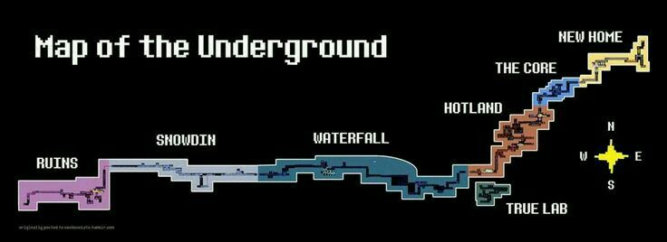

El Sistema Moral de Undertale
Undertale se destaca por su sistema donde tus acciones tienen consecuencias reales y permanentes. El juego recuerda cada decisión que tomas, dando forma a tres rutas principales:
Ruta Pacifista
La ruta donde muestras misericordia a todos los monstruos que encuentras. No matas a nadie y buscas resolver los conflictos mediante el diálogo y la comprensión. Esta ruta revela la historia más completa y ofrece el final más esperanzador.
Ruta Genocida
El camino opuesto: eliminas sistemáticamente a cada monstruo que encuentras. Esta ruta transforma completamente la experiencia, con diálogos alterados, jefes extremadamente difíciles y un final sombrío que permanece con el juego incluso en partidas futuras.
Ruta Neutral
La ruta más común para los jugadores primerizos, donde algunas decisiones son pacíficas y otras violentas. Ofrece múltiples finales basados en acciones específicas y sirve como introducción al sistema moral del juego.
Consecuencias Permanentes
Lo más innovador de Undertale es cómo recuerda tus acciones entre partidas. El juego detecta si has completado ciertas rutas y ajusta el diálogo y los eventos en consecuencia, creando una experiencia verdaderamente personalizada.
← Volver al Inicio